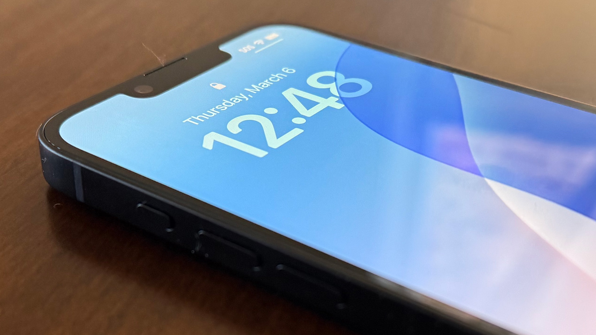

Wednesday, 02 16 2026
Report: Imminent Apple hardware updates include MacBook Pro, iPads, and iPhone 17

iPhone 17e Apple is apparently planning to launch an updated iPhone 17e, a new version of its basic iPhone.
The phone is said to include an A19 chip similar to the one in the regular iPhone 17, and it will also add MagSafe charging. Though the iPhone 17e will likely stick to the basic one-lens camera system and the notched, Dynamic Island-less screen, it will also launch at the same $599 price as the current 16e, which counts as good news given current AI-driven RAM and storage shortages.
This would be a change in how Apple approaches its lower-end iPhone. The old iPhone SE was updated pretty sporadically, with at least a couple of years between each of its updates. The iPhone 16e was introduced just last year. The biggest question is whether the 17e will continue to exist alongside the older but arguably superior iPhone 16 and 16 Plus, which start at just $100 more than the current iPhone 16e and include a dual-lens camera system and the Dynamic Island.
Having four different iPhone models available in the same $600-to-$800 price range is confusing at best. MacBook Pro This one’s easy: The M4 Pro and M4 Max versions of the 14- and 16-inch MacBook Pros will be replaced by M5 Pro and M5 Max versions. We’ve been expecting new MacBook Pros for a while now, ever since the 14-inch M5 MacBook Pro launched in the fall without higher-end M5 Pro and M5 Max models.
Shipping estimates for the current M4 Pro- and M4 Max-based MacBook Pros have been lengthening lately, which is sometimes a sign that manufacturing is winding down ahead of a new model. Though larger updates to the MacBook Pro are said to be in development at Apple, including models with OLED display panels and possibly touchscreens, the M5 versions will largely stick to the same designs Apple has been using since it introduced the M1 Pro and M1 Max MacBook Pros in late 2021.
Gurman says new Mac Studio models are also in the works, as are Mac minis, an update for the Studio Display, and the long-rumored “low-cost MacBook” that Apple is said to be planning to fill a gap in its laptop lineup. Apple has sold the old M1 MacBook Air through Walmart in the US for as low as $599 in recent years, an experiment that has apparently convinced the company that there’s room in its laptop lineup for a computer that comes in well below the $999 baseline it has used for most of its laptops over the last two decades.
Leave your comment.
John Bennects
in its laptop lineup. Apple has sold the old M1 MacBook Air through Walmart in the US for as low as $599 in recent years, an experiment that has apparently convinced the company that there’s room in its laptop lineup for a computer that comes in well below the $999 baseline it has used for most of its laptops over the last two decades.
Jack Markers
Gurman says new Mac Studio models are also in the works, as are Mac minis, an update for the Studio Display, and the long-rumored “low-cost MacBook
Markes Spencer
Gurman says new Mac Studio models are also in the works, as are Mac minis, an update for the Studio Display, and the long-rumored “low-cost MacBook